Design and make a 3D mold, and produce a fiber composite part in it
Design and make a 3D mold
I decide to make and experiment a double exercise:
I create a basic and simple 3D mold in wood material using a milling machine.
I decide to start to use an existing object as a physical 3D model. In particular I was interested in adding the imperfections on the surface of the object (a sort of object 'sick) to check the final look of the composite material (i.e. if the material hardening is capable of reproducing the imperfections that I had entered).I took a common plastic jar and started to wrap it with plastic cellophane.Within the film I inserted in an irregular way a series of balls made with masking tape.
I tried to create some imperfections that I wanted then check on the surface of the object at the end of the process.
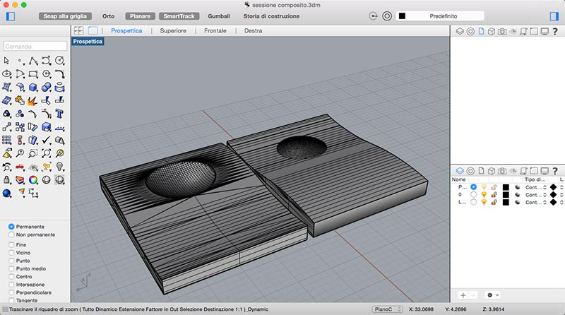
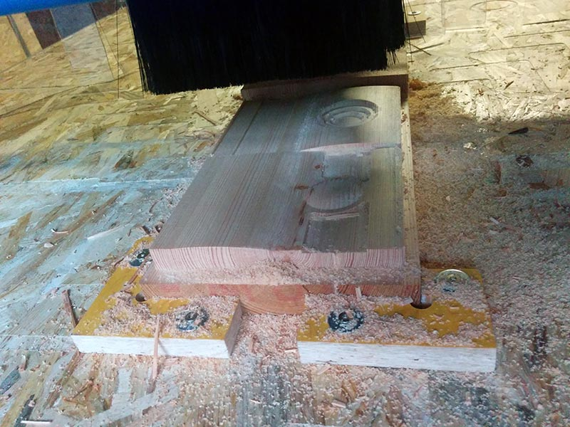
Produce a fiber composite
The first step was to smear the jar with synthetic wax in order to facilitate detachment of the piece.To create the composite I adopted the following process:
I took a cotton fabric (denim type) and I cut into strips;
I took a plastic mesh and I cut into strips;
I have prepared the material for the composite material (epoxy resin and its catalyst in a 2: 1 ratio)
I soaked the strips with the resin creating 3 layers: an inner layer of tissue, a central layer of plastic material and an outer layer of fabric.
I wrapped the object and the three layers of fabric and pattern with a transparent film;
I prepared a bag for vacuum and sucking the air I did join the material object (for 24 hours);
I removed the piece from the vacuum and I removed (with difficulty) the mold;
I trimmed the edges of the object and got a jar composite (which makes a nice noise when you slam on the table).
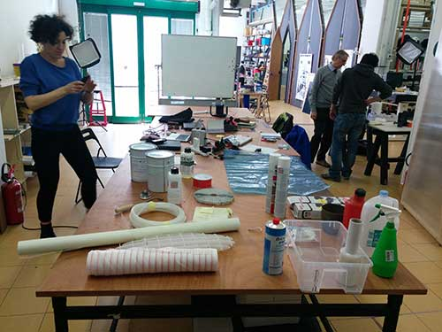
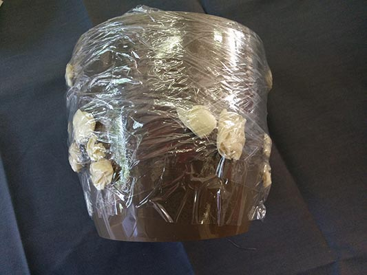
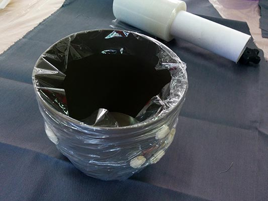
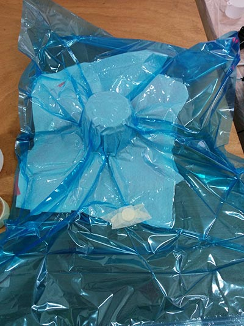
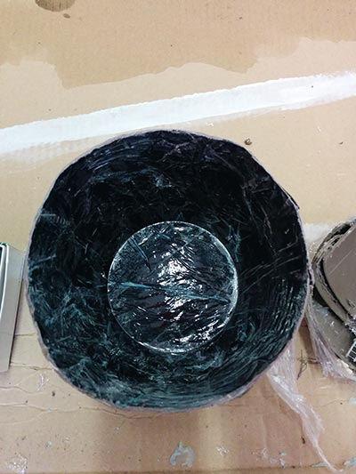
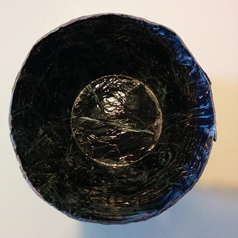
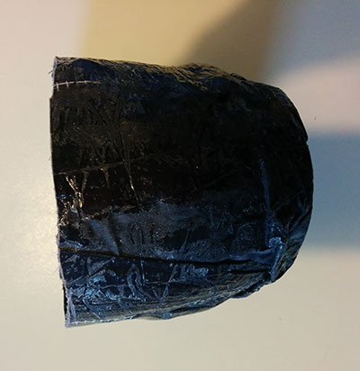
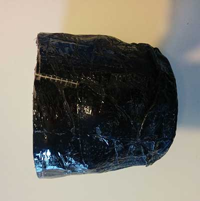
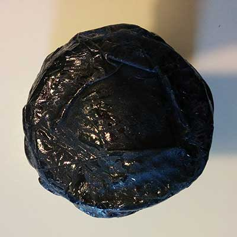
Making a composite using a 3D mold
I wrap it the two parts of 3D mold in order to create the composite. I used 75gr. of epoxy resin and its catalyst (50gr and 25gr) creating five layers alternating textile and plastic.
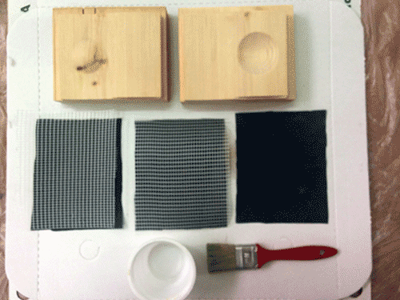
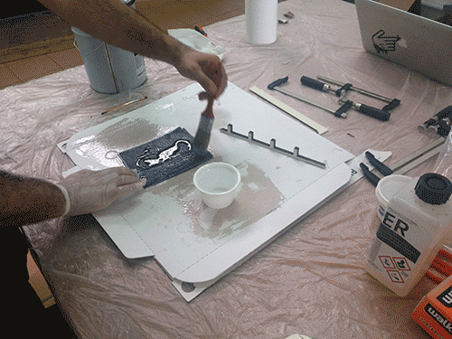
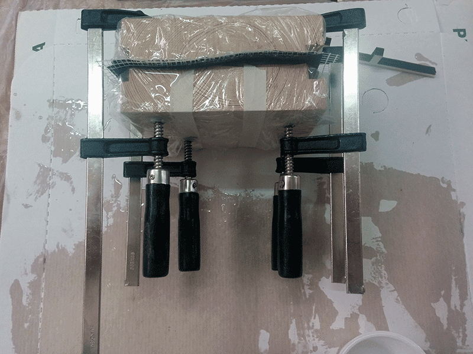
the final result seems good. There are some problems in the homogeneity of the material, but the use of 3D mold allow to create a very compact material.
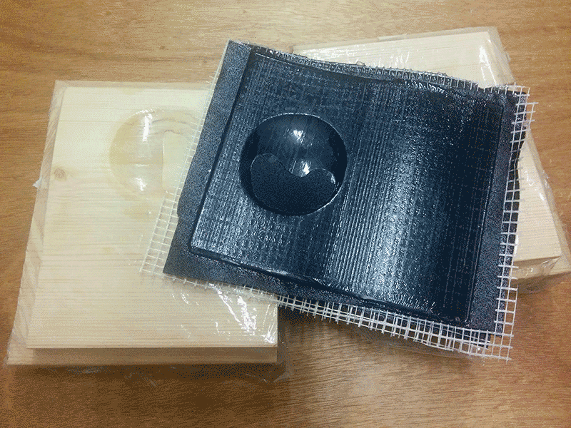
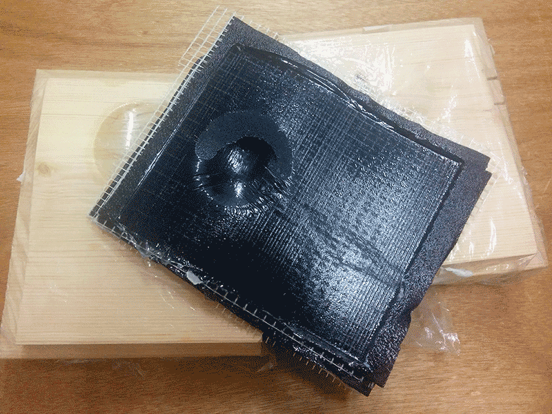
Problems and lessons learnt
First experiment. No particular problem using the 3mold. Second experiment. The composite has been created but not everything went the right way. These are the main problems I faced:
I have spread the resin evenly on the fabric but the fabric is impregnated unevenly during the vacuum phase;
Imperfections that I had tried to place the object you see in the final version;
The phase of vacuum did collapse the fabric creating too many folds (3 layers of fabric are too many)
The loose piece has been problematic (I had to cut the vessel).
Finding alternative solutions
To have a uniform object i want to use alternative techniques to achieve and experience:
The first solution is to create a customized fabric for composite. In this case the mold could be reproduced in 3D and then the 3D models exploded into a 2D one obtaining a fabric with a perfect surface for the object;
The second alternative is to use tubular fabrics thin and light as nylon stockings to adhere the object.